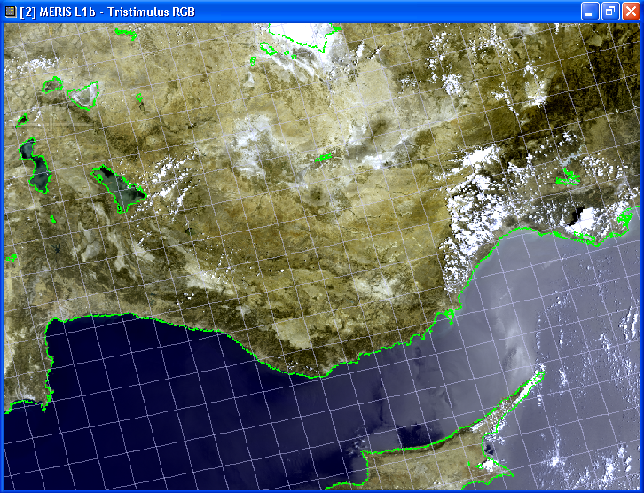
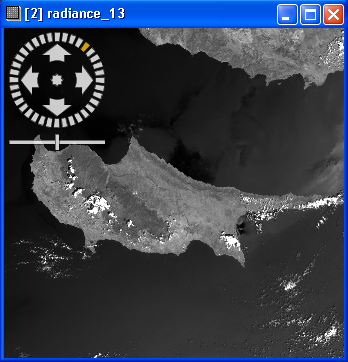
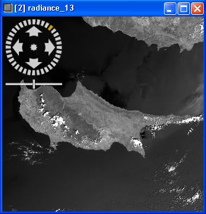
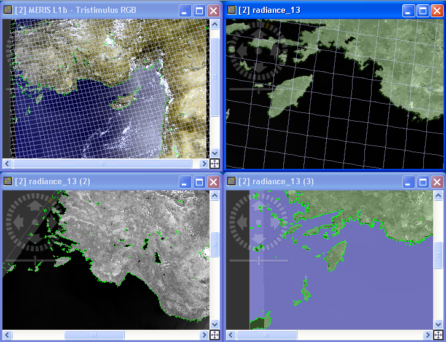
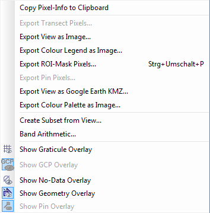

| Image View | |
The image view displays the sample values of raster datasets such as bands and tie-point grids as an image.
In VISAT 4.5, the display of prodcut scene images has been enhanced.
The view uses tiled images and image pyramids, this results in greatly improved image display performance
and memory usage.
Additionally the view is enhanced with a navigation control which can be used to to pan, zoom and rotate the
image.

By default the horizontal and vertical slider bars are disabled for the image view.
You can activate the sliders again in the preferences dialog in the section
Layer Properties.
If the slider bars are visible you have also a small button  in the
lower right corner of the image view which zooms to the fill image bounds if you click on it
in the
lower right corner of the image view which zooms to the fill image bounds if you click on it
The navigation control, which is located in the upper left corner of the image view, can be used to
pan, zoom and rotate the image. The visibility of the control is dimmed if the mouse pointer is not
located over the and it becomes visible when the mouse gets near the control.
If you rotate the image, you can use the CTRL-Key to change the stepping of the rotation angle from
continuous values to a discrete stepping of quarter of 90°.
The left image shows the dimmed version of the control the right one shows the active control with a rotation.
You can deactivate the navigation control in the preferences dialog in the section Layer Properties
 

It is possible to open more than one window of the same band to have several views. This can be done by selecting Open Image View from the context menu of the band name in the Product Tree. The will open a new view and will be numbered according to their appearance:

When you right-click the mouse over the image view a popup menu comes up:

Entries:
Note: The band to be used for each of the channels in the current RGB image view can be changed at any time in the Colour Manipulation Tool View window.